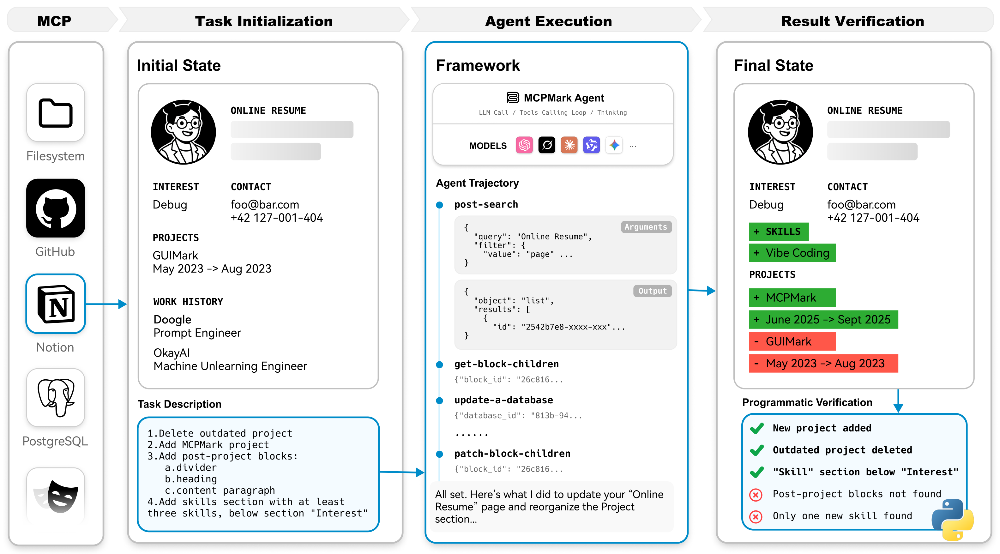
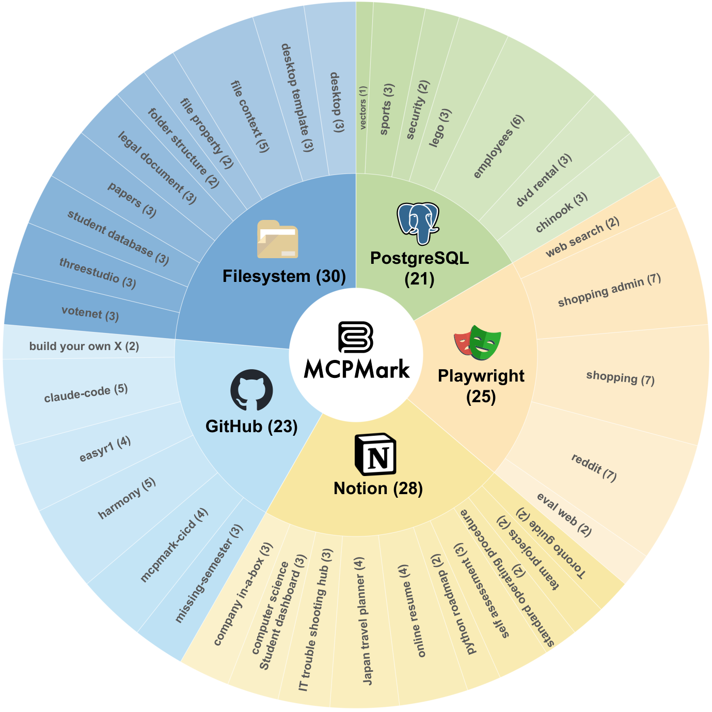
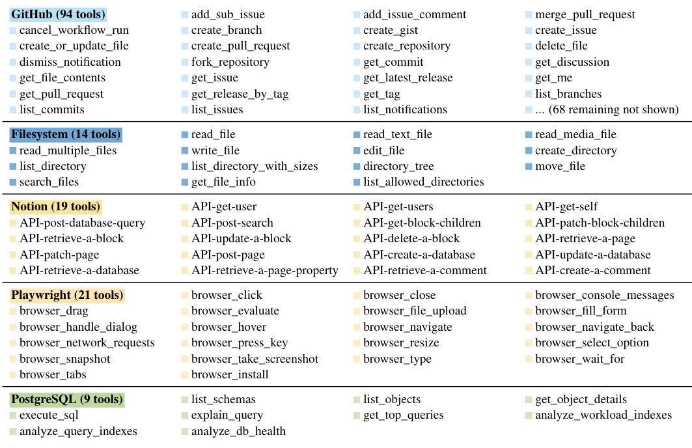
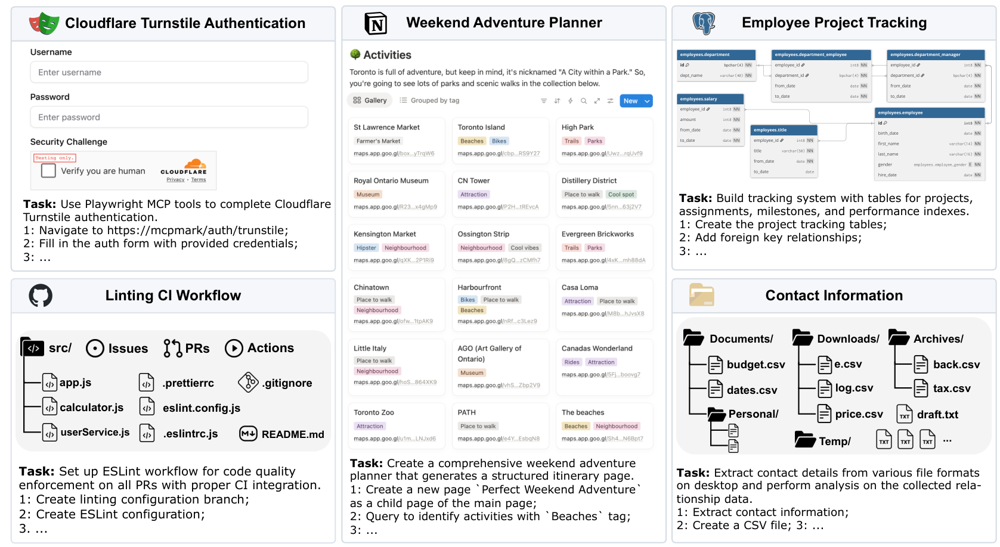
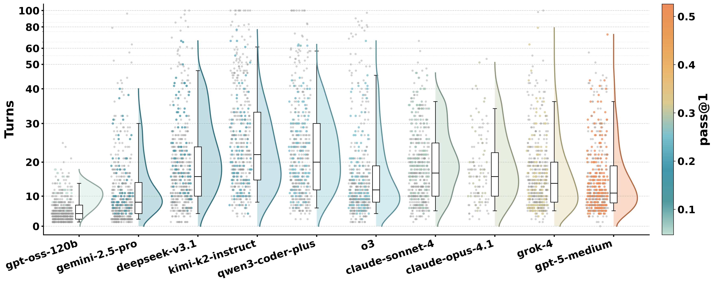

MCPMark：高强度压测「真实、全面」MCP 使用能力的 benchmark
MCPMark: A Benchmark for Stress-Testing Realistic and Comprehensive MCP Use
gpt-5-medium 也只拿到 52.56% pass@1 / 33.86% pass^4，claude-sonnet-4、o3 等都跌破 30% pass@1，平均每个任务需要 16.2 个 turn、17.4 次 tool call —— 说明当前模型在真实、长链路 MCP 场景下的稳定性与规划能力仍有巨大差距。
①开源贡献 Open-source Artifacts
MCPMark 是一个完全开源的 benchmark：评测框架（MCPMark-Agent + orchestration 代码）、127 个标准任务、每个任务的程序化验证脚本、Docker 沙箱、指标聚合工具均在 GitHub（Apache-2.0）公开；项目主页 mcpmark.ai 托管 leaderboard（截至解读日称收录 38 个模型）；完整的执行 trajectory 日志（2.81 GB）以单独数据集形式发布在 Hugging Face（MIT）。下表逐项核实。
| 类型 | 是否开源 | 内容 / 链接 |
|---|---|---|
| 代码 / 评测框架 | ✔ | github.com/eval-sys/mcpmark — Apache-2.0。含 MCPMark-Agent（基于 LiteLLM + MCP Python SDK 的极简 tool-calling agent）、5 个 MCP server 的接入与启动配置、隔离沙箱与「one-command / auto-resume / 统一指标」的 orchestration。 |
| Benchmark 任务 + verifier | ✔ | 随代码仓库发布：127 个标准任务（基于 38 个 curated initial states），每个任务自带 programmatic verification script；另含一套 50 个轻量「easy」任务（每个 server 10 个）供小模型使用。 |
| Trajectory 数据集 | ✔ | huggingface.co/datasets/Jakumetsu/mcpmark-trajectory-log（mcpmark-v1-0905，约 2.81 GB，MIT）。每次 run 含 meta.json/messages.json/execution.log，记录逐 turn 的 prompt、tool call、思考与结果，可做失败诊断。 |
| Leaderboard / 项目主页 | ✔ | mcpmark.ai（含 leaderboard 与 trajectory explorer）；由 EvalSys、LobeHub、NUS TRAIL 共同维护。 |
| 模型权重 Weights | — | 不适用：本文是 benchmark，不训练/发布模型。 |
@modelcontextprotocol/server-filesystem（MIT）、GitHub MCP server（MIT）、@notionhq/notion-mcp-server（MIT）、@playwright/mcp（Apache-2.0）、crystaldba/postgres-mcp（MIT）。Notion 与 GitHub server 走官方 remote API，需要相应账号/密钥才能复现远程任务。
②研究动机与贡献 Motivation & Contribution
背景与问题
MCP（Model Context Protocol，Anthropic 2024 提出）是连接 LLM 与外部世界（tool、API、数据库、上下文资源）的标准化接口。它让模型在真实环境里同时拥有「眼睛和手」，被普遍视为 agentic 时代的基础设施层。但现有 MCP benchmark 的覆盖面很窄：
- 读多写少（read-heavy）。很多任务只是查询/检索信息，几乎不触发 create/update/delete，无法考察模型对环境施加真实改动的能力。
- 交互深度有限。任务链路短、步数少，平均只需要个位数 turn（见下表对比），难以暴露模型在「长链路、多步、需要规划」时的性能边界。
- 验证不够严格。不少 benchmark 用 LLM-as-judge 打分，或起始状态是「通用/极简初始化」，既不真实也不够可靠。
结果是：这些 benchmark 任务模式单一，无法真正探到当前模型/agent 在 reasoning、planning、长上下文处理、tool use 上的天花板。作者用一张对比表（原文 Table 1）点明差异：
| Benchmark | 任务模式 | 验证方式 | 平均 Turn |
|---|---|---|---|
| MCPEval | Synthetic | Hybrid | N/A |
| LiveMCPBench | CRUD-diverse | LLM-as-judge | 3.2 |
| MCP-Universe | Read-heavy | Programmatic | 6.8 |
| LiveMCP-101 | N/A | LLM-as-judge | 5.4 |
| MCPMark | CRUD-diverse | Programmatic | 16.2 |
本文的切入点
作者的核心主张是：要真正衡量 MCP 使用能力，benchmark 必须同时满足三点 ——（1）任务真实且全面，覆盖 create/read/update/delete 的多步工作流；（2）每个任务从有真实意义的 initial state 出发（一个填好内容的 Notion 模板、一个有真实开发历史的 GitHub 仓库、一棵真实目录树……），而不是空环境；（3）用程序化脚本而非 LLM 打分做客观、可复现的验证。为了让任务既真实又「可机器判定」，他们设计了一条 human–AI 协作的任务构建流水线（专家 + 两个 agent 角色），并配一个刻意极简、不做任何任务/模型特定优化的 agent 框架，以测出模型「内在」的 MCP 能力。
核心贡献
- 提出 MCPMark。5 个真实 MCP server、127 个高质量任务、38 个 curated initial states；任务指令平均 288.6 词，验证脚本平均 209.8 行代码。相比已有 MCP benchmark，CRUD 覆盖更广、链路更长（平均 16.2 turn / 17.4 tool call）。
- 一条 human–AI 协作的任务构建 + 程序化验证流水线。10 位不同背景的专家（CS PhD、前端/全栈/AI infra 工程师、AI 投资人）与 task-creation / task-execution 两个 agent 迭代共建，每个任务耗费专家 3–5 小时；并配「带 sandbox + 自动 reset」的评测框架
MCPMark-Agent。 - 对前沿模型的系统评测与分析。覆盖 GPT-5 系列、Claude、Grok、Gemini、o3/o4-mini 等闭源模型与 Qwen3、Kimi-K2、DeepSeek、GLM-4.5、gpt-oss 等开源模型；发现最强的
gpt-5-medium仅 52.56% pass@1，并就「reasoning effort」「失败类型」「local vs remote server」「成本/turn 与表现的关系」给出可迁移结论。
③方法 Method：benchmark 如何构建与评测
MCPMark 的「方法」可拆成三块：(A) 选什么 server、什么 initial state、什么任务（benchmark 构建）；(B) 任务怎么被「造」出来又保证可机器判定（human–AI 协作流水线）；(C) 模型怎么被公平地跑起来并验证（evaluation framework）。整体生命周期如下图：每个任务从一个 curated initial state + 自然语言指令开始，MCPMark-Agent 进入 tool-calling loop 反复调用 MCP tool 直到给出最终回答，最后由 programmatic verifier 检查最终环境是否满足所有要求，验证完再把环境 reset 回初始态以便重复评测。

MCPMark-Agent 跑 tool-calling loop）→ Result Verification（程序化 verifier 逐条核对，如「新建项目 ✔ / 旧项目已删 ✔ / Skill section 至少含 3 项 ✔」）。(A) 5 个 MCP server 与 initial state
选取标准是「真实、常用、覆盖差异化交互模式」。每个 server 都完整支持 CRUD，且 initial state 都被精心设计成真实使用场景的起点（而非空环境）：
- Notion（19 tools）— 走官方 remote API 增删改查文档与数据库；initial state 由广泛使用的 Notion 模板实例化。
- GitHub（94 tools，部分未在图中展示）— 官方 remote API，支持项目管理与 Git 操作：CI/CD、issue、branch、PR、commit；initial state 取自有真实开发历史与配置的仓库。
- Filesystem（11 tools）— 本地文件 I/O、目录组织、元数据检查与搜索；initial state 是模仿真实日常使用的目录结构。
- PostgreSQL（9 tools）— 关系数据库的 schema 探索与 SQL 执行；initial state 是带真实 schema 的模板数据库。
- Playwright（21 tools）— 浏览器自动化：导航、表单填写、数据抽取、截图/PDF 导出；initial state 来自两类网页 —— 作者自建的、用于测试特定功能的网页（如 Cloudflare Turnstile 登录），以及改编自 WebArena 的 localhost 网页。

build your own X、Notion 的 weekend planner、Playwright 的 shopping admin 等）及各自的任务数。
API-post-database-query/API-patch-block-children、PostgreSQL 的 execute_sql/analyze_db_health、Playwright 的 browser_navigate/browser_take_screenshot 等。(B) human–AI 协作的任务构建流水线
难点在于：任务既要「真实、复杂」，又要能被一段确定性脚本判定对错——纯人写或纯 agent 造都难做好。作者让人类专家与两个 agent（task creation agent + task execution agent）配合，分四步迭代：
- Exploration（探索）：给定一个 initial state，专家与 creation agent 在一个高层指令/主题引导下共同探索环境，既建立全局认识，也挖掘出后续能支撑真实任务的深层细节。
- Evolvement（演化）：creation agent 提出新任务或在已有任务上「加难度」——删去冗余指令、增加信息检索难度（如把输入内容变长）、要求更多交互步骤；专家把关，确保任务仍然可行、可验证、足够有挑战。
- Verification（验证脚本）：creation agent 起草 programmatic 验证脚本；专家在 execution agent 协助下亲自把任务做一遍，反复打磨脚本直到与指令完全一致；专家还会手动调整最终环境状态，确认脚本对「成功」和「失败」都能正确区分（含 edge case）。
- Iteration（迭代）：重复 II、III 逐步提高难度，同时保持自动可验证性与场景真实性。
即便有 agent 协助，每个样本仍很费人力（专家 3–5 小时/任务）。有时专家直接凭经验手写自然语言指令、绕过 creation agent，但验证脚本仍在同一流水线里生成与打磨。Quality control：所有任务经专家 cross-review 与长达一个月的社区检查；对「没有任何模型做对」的任务还会额外人工复核，确保任务虽难但有效、判定无歧义。

(C) 评测框架与 MCPMark-Agent
State tracking。所有任务都在 sandbox 里执行，强制显式状态追踪，保证安全、可复现、跨模型公平比较。每次评测遵循固定生命周期：① 从良定义的 initial state 出发 → ② agent 执行 → ③ 程序化脚本检查最终环境是否满足要求 → ④ 验证后把环境 reset 回初始态，消除副作用、便于在相同条件下重复评测。
MCPMark-Agent。一个刻意做得「轻量、通用」的 agent 框架，基于 LiteLLM + MCP Python SDK。MCP server 通过 SDK 配好、把 tools 暴露给 agent；LiteLLM 负责把这些 tool 转成 OpenAI function-call 格式，并把请求路由到各家官方 API，从而尽量发挥每个模型的原生能力。评测时 agent 走一个 tool-calling loop：模型反复调用 MCP tool、解析 server 返回、调整动作，直到产生一个不再带任何 tool call 的最终回答，loop 即终止。
- 刻意不优化。框架故意省去生产系统里常见的优化，目的就是避开任务特定 heuristics 与模型特定 bias，测「内在」能力。
- 预算上限：每次 run 最多 100 turn、3600 秒 超时。
- 默认推理设置：除非特别说明，所有模型用各自默认 inference 设置（temperature、top-$p$、reasoning effort）。
- 两条执行路径：一条是经 LiteLLM 的通用 function-calling 路径；另一条是对特定模型（如 Anthropic extended thinking）的原生 tool-support 路径。
- 三个指标（见 ④）一致用
MCPMark-Agent跑出。
④实验评估 Evaluation
评测设置
- Benchmark：全部 127 个任务，按 5 个 server 分别报告，再聚合成 overall。
- 对比模型（baselines）：
闭源 ——
gpt-5（low/medium/high reasoning effort，以及 mini/nano 变体）、gpt-4.1(/mini/nano)、claude-opus-4.1、claude-sonnet-4、grok-4、grok-code-fast-1、o3、o4-mini、gemini-2.5-pro、gemini-2.5-flash； 开源 ——qwen3-coder-plus、qwen3-max、kimi-k2-instruct、deepseek-v3.1、glm-4.5、gpt-oss-120b（因 benchmark 太难，未测 ≤100B 之外的更小开源模型）。 - 指标 Metric（均越高越好）：
- pass@1 — 单次尝试成功率（4 次独立 run 取平均，报告 mean ± std）。
- pass@4 — 允许 4 次独立尝试，只要有一次成功即算成功（衡量重复尝试能否覆盖难题）。
- pass^4 — 更严格：4 次独立 run 全部成功才算对，是模型一致性 / 稳定性的强指标。
主要结果（原文 Table 2，pass@1 按 server 拆分 + 三指标）
下表为各模型在 5 个 server 上的 pass@1（FS=Filesystem, GH=GitHub, NT=Notion, PW=Playwright, PG=PostgreSQL）及三项总指标；本文最强模型一行加粗。
| Model | FS | GH | NT | PW | PG | pass@1 | pass@4 | pass^4 |
|---|---|---|---|---|---|---|---|---|
| 闭源 Proprietary | ||||||||
| gpt-5-medium | 57.50 | 47.83 | 41.96 | 43.00 | 76.19 | 52.56 | 68.50 | 33.86 |
| grok-4 | 50.83 | 14.13 | 2.68 | 35.00 | 58.33 | 31.69 | 44.88 | 18.11 |
| claude-opus-4.1 | 33.33 | 21.74 | 35.71 | 24.00 | 33.33 | 29.92 | — | — |
| claude-sonnet-4 | 27.50 | 16.30 | 21.43 | 26.00 | 53.57 | 28.15 | 44.88 | 12.60 |
| gpt-5-mini-medium | 33.33 | 18.48 | 16.07 | 12.00 | 61.90 | 27.36 | 45.67 | 9.45 |
| o3 | 35.83 | 14.13 | 24.11 | 15.00 | 36.90 | 25.39 | 43.31 | 12.60 |
| grok-code-fast-1 | 23.33 | 8.70 | 2.68 | 25.00 | 47.62 | 20.47 | 30.71 | 9.45 |
| qwen3-max（注：原表列于闭源组） | 10.83 | 14.13 | 16.96 | 8.00 | 44.05 | 17.72 | 22.83 | 11.02 |
| o4-mini | 25.00 | 14.13 | 20.54 | 12.00 | 11.90 | 17.32 | 31.50 | 6.30 |
| gemini-2.5-pro | 24.17 | 9.78 | 4.46 | 15.00 | 26.19 | 15.75 | 29.92 | 4.72 |
| gemini-2.5-flash | 8.33 | 15.22 | 6.25 | 6.00 | 10.71 | 9.06 | 18.11 | 3.94 |
| gpt-4.1 | 12.50 | 7.61 | 6.25 | 8.00 | 4.76 | 8.07 | 12.60 | 3.15 |
| gpt-5-nano-medium | 6.67 | 7.61 | 3.57 | 0.00 | 15.48 | 6.30 | 11.81 | 1.57 |
| gpt-4.1-mini | 3.33 | 6.52 | 1.79 | 0.00 | 9.52 | 3.94 | 7.09 | 1.57 |
| gpt-4.1-nano | 0.00 | 0.00 | 0.00 | 0.00 | 0.00 | 0.00 | 0.00 | 0.00 |
| 开源 Open-Source | ||||||||
| qwen3-coder-plus（开源最强） | 13.33 | 19.57 | 19.64 | 30.00 | 47.62 | 24.80 | 40.94 | 12.60 |
| kimi-k2-instruct | 14.17 | 16.30 | 8.04 | 30.00 | 47.62 | 21.85 | 31.50 | 12.60 |
| deepseek-v3.1 | 15.83 | 9.78 | 12.50 | 7.00 | 42.86 | 16.73 | 28.35 | 7.87 |
| glm-4.5 | 7.50 | 22.83 | 21.43 | 13.00 | 14.29 | 15.55 | 24.41 | 6.30 |
| gpt-oss-120b | 5.83 | 4.35 | 3.57 | 3.00 | 7.14 | 4.72 | 13.39 | 0.00 |
怎么读这些数字？
- 对前沿模型极难。最强的
gpt-5-medium也只有 52.56% pass@1；大多数闭源模型落在 15–30% pass@1，多个开源模型不到 10%。开源最强qwen3-coder-plus仅 24.80%。这印证了 benchmark 的「压测」定位。 - local server 普遍比 remote 好做。表现因 server 而异，且存在明显「本地 vs 远程」分水岭：PostgreSQL / Filesystem / Playwright 这类本地服务成功率高（
gpt-5-medium在 PG/FS/PW 分别 76.19/57.50/43.00），而 Notion / GitHub 这类远程服务大多数模型 <25%。作者归因于数据可得性：本地服务容易模拟、训练数据中常见；远程服务 API 需要真实交互轨迹，规模化采集成本高、在训练里被低估。 - 稳定性远远落后。pass@4 相对 pass@1 有可观提升（
gpt-5-medium68.50 vs 52.56，claude-sonnet-444.88 vs 28.15），说明「多试几次」确实能覆盖更多难题；但 pass^4 急剧下滑（gpt-5-medium 33.86、claude-sonnet-4 12.60），多数模型 pass^4 落在 5–15%。即「能偶尔做对，但很难每次都做对」——多轮 tool use 下的稳定性是普遍短板，这对真实部署是高风险信号。 - 交互量巨大。平均 16.2 turn / 17.4 tool call/任务，远超以往 MCP benchmark（见 ② 的 Table 1）。
qwen3-max、kimi-k2-instruct甚至平均 23.85/26.95 turn、23.02/26.22 tool call。
分析一：reasoning effort 的作用（原文 Table 3）
作者对 gpt-5 系列与 claude-sonnet-4 调不同 reasoning effort（low/medium/high），观察 overall pass@1：
| Model | Low | Medium | High |
|---|---|---|---|
| gpt-5 | 46.85 | 52.56 | 51.57 |
| gpt-5-mini | 8.27 | 27.36 | 30.32 |
| gpt-5-nano | 4.33 | 6.30 | 5.12 |
| claude-sonnet-4 | 27.36 | 28.15 (N/A 档) | 28.35 |
- 更多 reasoning 不是免费午餐，取决于模型基座能力。
gpt-5中/高档受益（46.85→52.56），gpt-5-mini提升更明显（8.27→30.32），但gpt-5-nano几乎无变化（4%–6%）、claude-sonnet-4也稳在 ~27–28%。说明「把额外 thinking token 转化为更好的 MCP 使用」并不平凡。 - reasoning 对 remote server 帮助最大。对
gpt-5，GitHub 从 low 的 27.17 翻倍到 high 的 50.00，Notion 从 36.61 升到 44.64；而本地的 PostgreSQL 稳在 72–76%、Filesystem 波动 <5 个百分点。作者解读为：远程服务训练曝光少、任务更难，需要更强的 test-time 泛化，而 reasoning 正好能「以语言外推到未见情形」（呼应「language generalizes through reasoning in agents」）。
分析二：turn 数与失败类型

- turn 多 ≠ 表现好。成功靠「更好的决策与定向探索」，而非盲目试错。
kimi-k2-instruct常进入 overcalling 模式（超过 30 turn 仍在调用，成功率反降，疑似卡住/陷入循环）；gpt-5-medium在保持合理 turn 预算的同时拿到最高 pass@1。 - 成本不是表现的代理（原文 Figure 22）。更高的花费并不带来更高准确率：一些最贵的 run 反而 pass@1 更低，而若干低成本 run 反而更好；即便 turn 数相近，成本也可能差很多。
- 失败类型拆解（原文 Figure 5）：分 implicit（任务正常跑完但没通过验证，多由 reasoning/planning/长上下文问题导致，难归因到单一因素）与 explicit（可定位的显式错误：context window overflow / turn limit exceeded / abandoned / premature stop / malformed tool calls）。
implicit 失败占大头，普遍超过 50%：
gpt-5-high和kimi-k2-instruct的 implicit 失败超过 84%（能力型、隐蔽的错误）；而gemini-2.5-flash(52%)、gpt-4.1(66%) implicit 占比更低、显式原因更多——前者多为 abandoned/premature stop（reasoning/planning 偏弱）且约 10% 是 malformed tool calls（与 tool-call 约定不匹配），gpt-5-high更多是 context window overflow（长上下文吃不消），kimi-k2-instruct则频繁 turn limit exceeded（重复 tool-calling loop）。
消融 / 设计取舍
本文不是「带消融的 method 论文」，但其评测框架的几个取舍本身就是关键设计验证：(1) 极简、无任务/模型特定优化的 agent —— 作者明确这是为了测「内在能力」、避免被工程 trick 污染（代价是绝对分数偏低，他们承认更专门的 agent 设计能提分，留作 future work）；(2) 程序化 verifier + 自动 reset 取代 LLM-as-judge —— 换来客观、可复现、可重复评测；(3) pass^4 这一严格指标是本文用来「揭示稳定性差距」的决定性视角，比常用的 pass@1/pass@4 更能反映真实部署关心的「每次都对」。
⑤洞见 Insights
- 真实 MCP 使用远未被解决，瓶颈在「稳定性」而非「偶尔做对」。当任务变成长链路、需 CRUD 的真实工作流时，最强模型 pass@1 也只有一半、pass^4 仅 1/3。pass@1↗pass@4↗ 但 pass^4↘ 的剪刀差，把「多轮 tool use 下的一致性/可靠性」明确标定为下一阶段的核心难题。
- 「local vs remote」分水岭 = 训练数据可得性的镜子。本地服务（FS/PG/PW）容易模拟、数据多，模型就强；远程服务（Notion/GitHub）需要真实交互轨迹、采集贵、训练中被低估，模型就弱。数据，尤其是真实远程交互轨迹，仍是提升 MCP 能力的关键——这也解释了为何作者把 trajectory 日志开源。
- reasoning 与「少而准」的 tool use 才是制胜点，堆 turn / 堆成本都不灵。更强模型用更少、更有针对性的调用取胜；reasoning effort 的收益高度依赖基座能力，且对远程服务的 test-time 泛化帮助最大（「language generalizes through reasoning」）。
局限与未来
- 构建难以规模化。高质量任务靠专家 3–5 小时/个手工打磨，成为产出大规模训练数据的瓶颈；作者提议走「半自动任务生成 + 缩短执行链」。
- 难度梯度偏陡。很多任务对小/高效模型太难，限制了对这类模型的评测与引导价值；未来想引入更细的难度梯度。
- 缺少「意图模糊」任务。当前任务指令清晰；未来想加入意图含糊的任务，考察 agent 主动澄清提问 / 推断真实意图的能力。
- server 多样性可再扩。纳入更多种类的 MCP server，覆盖更广的数字工具。
- 作者还点出三条更宏观的研究轴：更强的 reasoning、面向长程任务的 context efficiency（更好的 summarization / 更精简的 tool 输出），以及可靠落地必需的 execution stability（健壮的 error-handling 与自我纠错）。
与相关工作的关系
沿 LLM agent 的发展脉络（ReAct → MetaGPT，tool use / planning / multi-agent / coding agent / GUI agent / deep research），MCP 被定位为统一「tool 与环境接入」的协议层。在 MCP 评测这一支，已有 MCPEval、MCP-Universe（多领域、长动态工作流）、LiveMCP-101（多工具交互与执行计划校验）、MCP-AgentBench（数百任务、广覆盖）等。MCPMark 的区别在于：用容器化、可复现的真实环境承载多样 CRUD任务，每个任务配程序化验证脚本与全程状态追踪，从而实现更可靠、更细粒度的评测，并把链路长度与压测强度推到新的量级（平均 16.2 turn）。